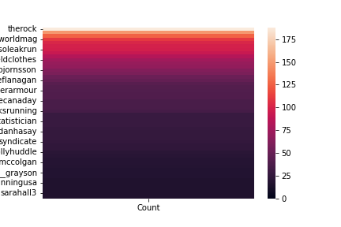
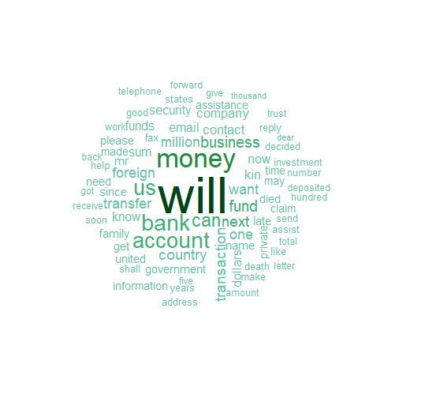
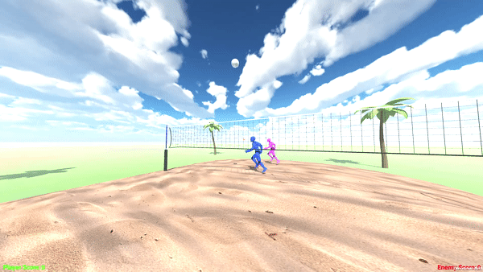

This project was my final project in my undergrad. I had the chance to work on the backend software of a dashboard that displayed the number of free parking spaces in a given parking lot at my university. My group used ESP32 microcontrollers and laser sensors to count the number of cars going in and out of the parking lot driveway. These controllers then communicated to the backend on a remote server.
The backend work included defining sockets for the controllers to connect to. This was done in C, and used stream sockets. We then created multiple child processes to communicate over the port and update the data into a MySql database. These entries were then pulled by the react dashboard for viewing.
I really enjoyed the low-level C programming aspect. It was interesting to learn about message protocol, and to develop one for my group. A favorite course of mine from undergrad was a systems programming elective. I learned about Unix programming, and had to dig into manuals and documentation for system calls that have been around longer than I have been alive. Learning about this technology was very interesting due to the age.
I like analyzing data and investigating what parts of my own data are being collected by the apps I use everyday. The following image is a heatmap of my own instagram likes cleaned using python and displayed with seabord.
My hypothesis for the project was that my likes would be distributed fairly around my close group of friends from high school. The visual above shows that the hypothesis is definitely rejected. It was news to me, but the rock garnered more of my attention compared to other accounts by multiple orders of magnitude.
I also collected my tikTok data to do some analysis, but found that the only metric that had any integrity was search history. Other dimensions either lacked working links, or did not have enougn data to be interesting. I encourage others to check out their own data! They can usually be accessed through app or on the apps website.
This project was the culmination of a data mining course from my undergrad. The project was individual, and ingested data from the famous Nigerian Letter dataset. This was a collection of emails sent from scammers with the goal of getting money from the victim. The final code displayed some visualizations on a website for a user to investigate. Some of the parameters a user could change was the kinds of words to include or reject from data. Altering this parameter change the visuals live, and when including a user included all words for analysis the wordcloud looked like below. Will was such a large outlier it was almost removed from the set, but will had a double meaning as a verb, as well as the document determing where money would go after someone passed away. It was defintely used often in this context to claim the victim was going to get money, but needed to pay a small fee to claim it. The project was built in R using Shiny.
An interesting aspect of the project was learning to cache intermediary data so that the application could load quickly. I think this experience was valuable. The repo is here Github.
This was the product of an elective I took in undergrad. C# was new to me, as well as the entire unity suite. I would say the only part of the course I was comfortable in was the linear algebra aspect of the course!
Nevertheless, I was able to create a final product, full of the most stunning volleyball gameplay, sprites, and controls never before seen.

Sarcasm Alert
In the end it was a great learning experience, and if I ever get an itch to create something with unity, I can draw on this project for inspiration.